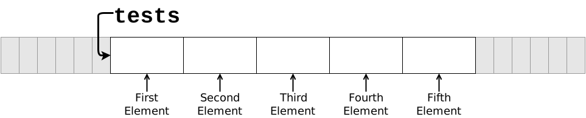
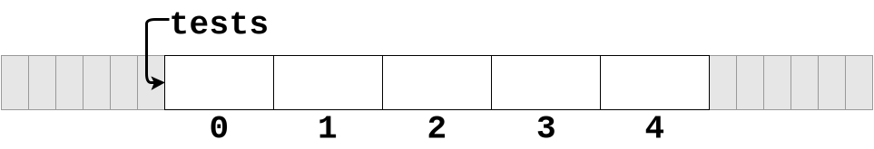
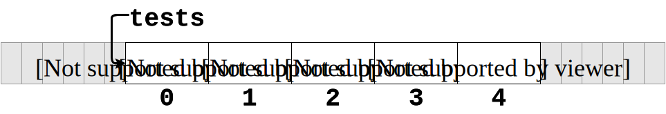

Arrays
📚 Gaddis (Ch. 7)
The C++ Array
An array is a data structure consisting of multiple values of the same type stored contiguously in memory and accessed by an integer index representing the offset of the desired element from the beginning of the array.
Arrays allow programmers to store multiple related values of the same type.
- Values are stored sequentially in memory.
- Declaration syntax:
typearrayname[size_declarator];
Example Declarations
Array Memory Layout
The declaration:
allocates the following memory:
Array elements are contiguous boxes in memory.
- Arrays are a reference type.
- The array variable does not refer to the array as a whole, only to the location of the first element.
Terminology
In the declaration:
int tests[5];
intis the data type of all elements in the array.testsis the name of the array.5(in[5]) is the size declarator. It specifies the number of elements.- The storage size of the array is \(N \times S\) where \(N\) is the number of elements and \(S\) is the size (in bytes) of each element.
- The size declarator must be either a literal or constant.
Size Declarators
Named constants are often used as size declarators.
- Makes maintenance easier if size needs to change.
- Avoids creating “magic numbers”.
- magic numbers are literal numeric values that appear repeatedly for reasons that are non-obvious by the context.
Indexes and Elements
Each individual data item in an array is referred to as an array element.
Elements are identified by an integer index, starting from 0.

Initial Values
Array elements start out uninitialized if their base types do (primitive types, for example).

Use the element’s index number and array index syntax to access individual elements:
Example
Produces:
Array with values.
Generate Indices with a Loop
The array index may be specified by a literal, variable, or integer expression.
Example: Initialize Array with Loop
Details: Declaration and Initialization
- Size declarators must be a literal or constant.
- You cannot use a variable as a size declarator.
- No, you really can’t!
- Seriously, you can’t.
- No, you really can’t!
- You cannot use a variable as a size declarator.
- C++ provides no bounds checking for indices!
- You must be careful not to access out-of-bounds.
- Never trust a user-entered value for calculating an index! Check it first.
Uniform Initialization Syntax
Produces:
- Size declarator is optional here, since the compiler can count.
- This is only useful if you know all of the values that will be stored at the time you are writing the program.
- That is rarely the case.
- Loops are generally the best option.
Array Assignment
Correct way - Assign element-by-element:
Arrays as Parameters
Arrays may be passed to functions:
void print_tests(int tests[], int size){
for(int i = 0; i < size; i++){
std::cout << tests[i] << "\n";
}
}- Notice that the array’s size must also be passed.
- Arrays do not “know their own size”.
- Notice the empty size declarator in the formal parameter.
- The first dimension does not require (or allow) a size declarator in a formal parameter declaration.
- Arrays are always passed by reference.
Reminder: use const when you can!
Arrays are passed by reference—always.
Reminder: use const when you can!
Arrays are passed by reference—always.
void print_tests(const int tests[], int size){
for(int i = 0; i < size; i++){
std::cout << tests[i] << "\n";
}
}Use a const qualifier to promise that the function will not modify the array.
1-D Arrays Key Points Summary
Size declarator must be a literal or constant.
C++ provides no bounds-checking for indices.
Array elements start out uninitialized if their base types do.
- They are default constructed if the base type is a structured or object type.
Arrays cannot be directly assigned.
Arrays are always passed by reference to functions.
Arrays do not “know” their own size.

Arrays

CS 50x2 Accelerated Programming Series